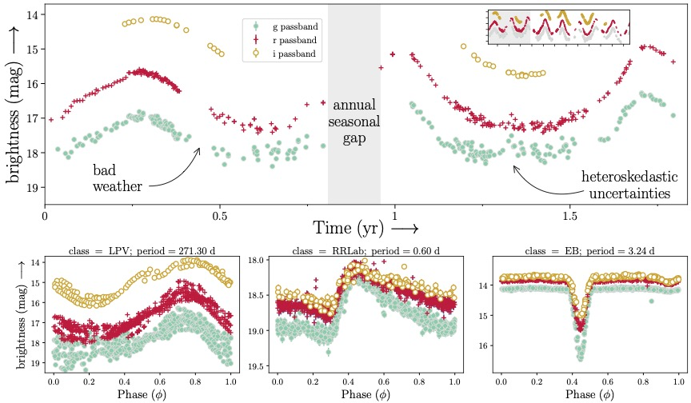

🔥[Oct 2025] Hong-yu is going to present our project "StarEmbed-GPT: Toward a Foundation Model for General-purpose Inference on Variable Stars", at 2025 Open Accelerated Computing Summit.
🔥[Sep 2025] Hong-yu gives a talk at Open SkAI 2025, Chicago. "StarEmbed-GPT: Torward a foundation model for general-purpose inference on variable stars".
Time series foundation models (TSFMs) are increasingly being adopted as highly- capable general-purpose time series representation learners. Although their training corpora are vast, they exclude astronomical time series data. Observations of stars produce peta-scale time series with unique challenges including irregular sampling and heteroskedasticity. We introduce StarEmbed, the first public benchmark for rigorous and standardized evaluation of state-of-the-art TSFMs on stellar time se- ries observations (“light curves”). We benchmark on three scientifically-motivated downstream tasks: unsupervised clustering, supervised classification, and out-of- distribution source detection. StarEmbed integrates a catalog of expert-vetted labels with multi-variate light curves from the Zwicky Transient Facility, yielding ~40k hand-labeled light curves spread across seven astrophysical classes. We eval- uate the zero-shot representation capabilities of three TSFMs (Moirai, Chronos, Chronos-Bolt) and a domain-specific transformer (Astromer) against hand- crafted feature extraction, the long-standing baseline in the astrophysics literature. Our results demonstrate that these TSFMs, especially the Chronos models, which are trained on data completely unlike the astronomical observations, can outperform established astrophysics-specific baselines in some tasks and effectively generalize to entirely new data. In particular, TSFMs deliver state-of-the-art performance on our out-of-distribution source detection benchmark. With the first benchmark of TSFMs on astronomical time series data, we test the limits of their generalization and motivate a paradigm shift in time-domain astronomy from using task-specific, fully supervised pipelines toward adopting generic foundation model representa- tions for the analysis of peta-scale datasets from forthcoming observatories.
The benchmark dataset includes multi-variate time-series observations of periodic variable stars. The flux is presented in magnitudes (an astronomy specific unit), while the time is recorded as the modified Julian date. The observations are from the Zwicky Transient Facility (ZTF), which repeatedly scans all stars visible from the Northern hemisphere every few days. ZTF observes in three different passbands, g, r and i roughly corresponding to visible green, visible red, and (outside the visible) infrared light, respectively. We use observations from ZTF data release 23 (DR23) which spans a duration of ~6.5 yr and contains billions of light curves. While many labels for periodic variable stars exist within the literature, the vast majority of these labels are derived from low-capacity machine learning models. A careful selection of light curves is therefore warranted to prevent significant label noise within the benchmark. We thus avoid these catalogs in establishing this benchmark.
| Class | EW | EA | RRab | RRc | RRd | RS CVn | LPV |
|---|---|---|---|---|---|---|---|
| Train | 18,998 | 2,889 | 1,386 | 3,233 | 298 | 942 | 255 |
| Validation | 2,690 | 410 | 194 | 463 | 42 | 134 | 35 |
| Test | 5,387 | 818 | 397 | 926 | 83 | 276 | 70 |
| Total after cuts | 27,075 | 4,117 | 1,977 | 4,622 | 423 | 1,352 | 360 |
One can observe that not only does the label distribution is highly imbalanced, but also the number of observations is limited (40k labels across 7 classes with over billions of light curves).
Several challenges are posted in analyzing the light-curve data, such as the massive data scale, limited labels, irregular data points and various of noises. Example ZTF light curves illustrating unique characteristics of astronomical time series, including multiple passbands, large observational gaps, and heteroskedastic uncertainties. Top panel: Observed light curve of a periodic variable exhibiting typical characteristics of the observations. The inset shows the full ~6.5 year duration of ZTF observations. Lower panels: Phase-folded light curves highlighting the differing periodic patterns in three different classes. Note that most stars have few i passband observations so we exclude these data from our analysis.

In light curve datasets, very often the data points are irregularly sampled, sometimes due to the seasonal gaps, bad weather conditions, etc. Also, the data points are often accompanied by heteroskedasticity, which means the variance of the data points is not constant. These challenges make the analysis of light curves more difficult.
DESCRIPTION OF LEADERBOARD
Click on Clustering (K-Means), Clustering (Ward), Classification (MLP), Classification (Logistic), Classification (RF) and Classification (k-NN) to expand detailed results.
Last updated: 09/30/2025
| Reset | K-Means | Ward | ||||||
|---|---|---|---|---|---|---|---|---|
| Name | Size | Date | NMI | ARI | F1 | NMI | ARI | F1 |
Clustering results using unsupervised heads (K-Means, Ward) with metrics (NMI, ARI, F1). The best in each column is bold, second best is underlined.
| Reset | MLP | k-NN | Logistic | Random Forest | ||||||||||||||
|---|---|---|---|---|---|---|---|---|---|---|---|---|---|---|---|---|---|---|
| Name | Size | Date | Acc. | Recall | Precision | F1 | Acc. | Recall | Precision | F1 | Acc. | Recall | Precision | F1 | Acc. | Recall | Precision | F1 |
Classification results using simple supervised heads (MLP, k-NN, Logistic, Random Forest) with metrics (Accuracy, Recall, Precision, F1). The best in each column is bold, second best is underlined.
We delve into the analysis of errors by GPT-4V, a pivotal aspect for understanding its operational capabilities and limitations. This analysis serves not only to identify the model's current shortcomings but also to guide future enhancements in its design and training. We meticulously examine 150 randomly sampled error instances from GPT-4V's predictions. These instances are analyzed by expert annotators who identify the root causes of mispredictions based on their knowledge and the golden explanations if available. The distribution of these errors is illustrated in Figure, and a selection of 100 notable cases, along with detailed analyses, is included in the Appendix.
| Purity | |||
|---|---|---|---|
| Top 1 percentile | Top 5 percentile | Top 10 percentile | |
Astromer-1 |
0.014 (0.020) | 0.087 (0.018) | 0.121 (0.001) |
Astromer-2 |
0.139 (0.019) | 0.124 (0.001) | 0.119 (0.001) |
Moirai-small |
0.172 (0.023) | 0.143 (0.003) | 0.152 (0.002) |
Chronos-tiny |
0.165 (0.005) | 0.129 (0.017) | 0.158 (0.021) |
Chronos-Bolt-tiny |
0.569 (0.037) | 0.536 (0.053) | 0.528 (0.050) |
| Random Embeddings | 0.116 | 0.116 | 0.116 |
| Hand-crafted features | 0.213(0.009) | 0.280(0.006) | 0.260(0.002) |
@inproceedings{yue2023mmmu,
title={MMMU: A Massive Multi-discipline Multimodal Understanding and Reasoning Benchmark for Expert AGI},
author={Xiang Yue and Yuansheng Ni and Kai Zhang and Tianyu Zheng and Ruoqi Liu and Ge Zhang and Samuel Stevens and Dongfu Jiang and Weiming Ren and Yuxuan Sun and Cong Wei and Botao Yu and Ruibin Yuan and Renliang Sun and Ming Yin and Boyuan Zheng and Zhenzhu Yang and Yibo Liu and Wenhao Huang and Huan Sun and Yu Su and Wenhu Chen},
booktitle={Proceedings of CVPR},
year={2024},
}